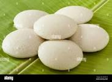

Idly!!

Description
Idli is a soft, pillowy steamed savory cake made from fermented rice and lentil batter. The lentils used in making the idli batter are urad dal (hulled black gram).
Black gram is also known as matpe beans, urad beans. To make idli the off white colored husked/hulled black gram is used – it can be split or whole.
Ingredients
- 1 cup urad dal
- 2 cup idli rice
- water, for soaking and grinding
- 2 tsp salt
Steps
- firstly, in a large bowl soak 1 cup urad dal for 2 hours.
also, soak 2 cup idli rice for hours
- after, 1 hour of soaking of urad dal, drain off the water and transfer to the grinder.
grind for 45 minutes adding water as required. use urad dal soaked water for grinding, as it helps in fermentation.
- the batter is well fermented when it has doubled in volume.
mix the batter gently, without disturbing the air pockets.
- steam the idli for 10 minutes or until the toothpick inserted comes out clean.
finally, enjoy soft idli with chutney and sambar.
- Eat!
Return to Home page